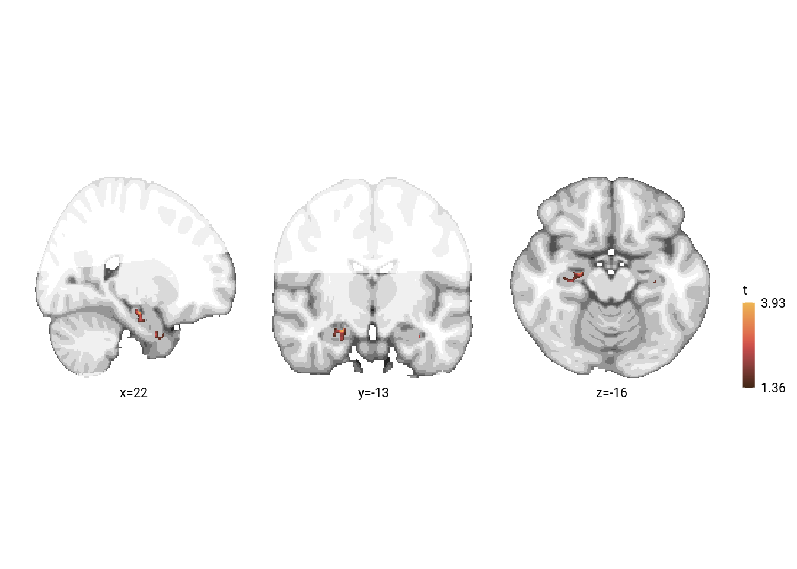

11 Univariate GLM: Relative time
We want to run a GLM with the relative time of other events as a parametric modulator for activity evoked by picture presentations in the picture viewing task. We will use the already-preprocessed data and use some FSL tools to implement the GLM
11.1 Copy FEAT-folder from Preprocessing to First-Level GLM directory
First, set up the folder we are working in. Make sure it’s empty when we start and then copy the preprocessed data there because we don’t need to repeat the preprocessing.
dirs$level1glm_dir <- here("data", "mri", "processed", "glm_rel_time" )# if the directory is not empty delete everything for a fresh start
if(is_empty(dir(path = dirs$level1glm_dir)) | !length(dir(path = dirs$level1glm_dir)) == 0) {
# delete the entire directory and create it again
# unlink(dirs$level1glm_dir, recursive = TRUE)
dir.create(dirs$level1glm_dir)
}
# copy preprocessing FEATs to directory (~45 mins)
if(length(dir(path = dirs$level1glm_dir)) == 0) {
start_time <- Sys.time()
print('Copying preprocessed data to first level folder')
for (i_sub in subjects){
# copy the preprocessed data
dir.create(file.path(dirs$level1glm_dir, sprintf("VIRTEM_P%s", i_sub)), recursive = TRUE)
to_copy <- list.dirs(file.path(dirs$feat_dir, sprintf("VIRTEM_P%s", i_sub)), recursive = FALSE)
to_copy <- grep("RSA_02", to_copy, value = TRUE)
file.copy(from = to_copy, to = file.path(dirs$level1glm_dir, sprintf("VIRTEM_P%s", i_sub)), recursive = TRUE)
}
end_time <- Sys.time()
end_time-start_time
}11.2 Prepare GLM
Compute relative time
First, we need to calculate, for each event, the mean relative time of events at the same sequence position in the other sequences. As a difference to the main behavioral analyses, we use the absolute relative time of other events.
# load data from CSV
fname <- file.path(dirs$data4analysis, "behavioral_data.txt")
col_types_list <- cols_only(
sub_id = col_factor(),
day = col_factor(),
event = col_factor(),
pic = col_integer(),
virtual_time = col_double(),
real_time = col_double(),
memory_time = col_double(),
memory_order = col_double(),
sorted_day = col_integer()
)
beh_data <- as_tibble(read_csv(fname, col_types = col_types_list))
head(beh_data)
# quantify the deviation in virtual time for each event relative to other events
# at the same sequence position
beh_data$rel_time_other_events<-NA
for (i_day in 1:n_days){
for (i_event in 1:n_events_day){
# find the events at this sequence position from all four sequences
curr_events <- beh_data[beh_data$event == i_event,]
# find the average virtual time of the other events at this sequence position
avg_vir_time_other_events <- curr_events %>%
filter(day != i_day) %>%
summarise(avg_vir_time = mean(virtual_time)) %>%
select(avg_vir_time) %>%
as.numeric(.)
# for the given event, store the relative time of the other events,
# as the absolute difference in virtual time (positive values mean other events happen later)
event_idx <- beh_data$day==i_day & beh_data$event==i_event
beh_data$rel_time_other_events[event_idx] <- abs(avg_vir_time_other_events - beh_data$virtual_time[event_idx])
}
}
# center the relative time
beh_data %>%
mutate(rel_time_other_events = scale(rel_time_other_events, center = TRUE, scale = FALSE))Write custom EV files for FSL FEAT
As a first step, let’s write the EVs to file. For that we load the log from the post-learning picture viewing, split it into the ten blocks of each of those runs, and reference the onset times of the event image presentations to the first volume of the scanning runs. Then we write out the custom EV files:
- picture presentations
- relative time parametric modulator for picture presentations
- catch trial picture presentations
#Write custom EV files for FSL FEAT
for (i_sub in subjects){
# define the directory we want to use
feat_in_dir <- file.path(dirs$level1glm_dir, "feat_evs", i_sub)
if (!dir.exists(feat_in_dir)){dir.create(feat_in_dir, recursive = TRUE)}
for (i_run in 2:n_runs){
# load the logfile for this run (pre or post)
log_fn <- file.path(dirs$pvt_log_dir, sprintf('P%s_%svirtem.txt', i_sub, runs[i_run]))
log <- read.table(log_fn)
colnames(log) <- c("pic", "fix_start", "pic_start", "volume", "response", "RT", "trial_end")
# split the log file into the 10 blocks
log_split <- split(log, rep(1:10, each = 21))
# reference volume numbers to the first volume of that block
vol_block <- lapply(log_split, function(x){x$volume - x$volume[1]})
log_split <- mapply(cbind, log_split, "vol_block"=vol_block, SIMPLIFY=FALSE)
# reference picture starts to 0 for each block
pic_start_block <- lapply(log_split, function(x){((x$vol_block)*2270)/1000})
log_split <- mapply(cbind, log_split, "pic_start_block"=pic_start_block, SIMPLIFY=FALSE)
for (i_block in 1:10){
# write picture onset EV file
fn <- file.path(feat_in_dir, sprintf("%s_%s_%02d_%s.txt",
i_sub, runs[i_run], i_block, "pic_on"))
log_split[[i_block]] %>%
filter(pic != 21) %>%
select(pic_start_block) %>%
mutate(duration = 2.5,
weight = 1) %>%
write.table(., file = fn, row.names = FALSE, col.names = FALSE, sep = "\t")
# write parametric regressor for picture onsets to EV file based on relative time of other events
# get the relative times for pictures (sorted 1-20)
rel_times <- beh_data %>% filter(sub_id == as.numeric(i_sub)) %>%
arrange(pic) %>%
pull(rel_time_other_events)
fn <- file.path(feat_in_dir, sprintf("%s_%s_%02d_%s.txt",
i_sub, runs[i_run], i_block, "rel_time"))
log_split[[i_block]] %>%
filter(pic != 21) %>%
arrange(pic) %>%
mutate(rel_time = rel_times) %>%
arrange(pic_start_block) %>%
select(pic_start_block, rel_time) %>%
mutate(duration = 2.5) %>%
relocate(duration, .before = "rel_time") %>%
write.table(., file = fn, row.names = FALSE, col.names = FALSE, sep = "\t")
# write catch picture onset EV file
fn <- file.path(feat_in_dir, sprintf("%s_%s_%02d_%s.txt",
i_sub, runs[i_run], i_block, "catch_pic_on"))
log_split[[i_block]] %>%
filter(pic == 21) %>%
select(pic_start_block) %>%
mutate(duration = 2.5,
weight = 1) %>%
write.table(., file = fn, row.names = FALSE, col.names = FALSE, sep = "\t")
# write button press EV file
fn <- file.path(feat_in_dir, sprintf("%s_%s_%02d_%s.txt",
i_sub, runs[i_run], i_block, "button_press"))
log_split[[i_block]] %>%
filter(response == 1) %>%
mutate(press = pic_start_block + RT/1000,
duration = 0,
weight = 1) %>%
select(press, duration, weight) %>%
write.table(., file = fn, row.names = FALSE, col.names = FALSE, sep = "\t")
}
}
}GLM Design files
Now that we have the relevant EV files, let’s set up the GLM using the tools from FSL FEAT. We create a configuration file for each block of each participant.
dsgn <- '
# FEAT version number
set fmri(version) 6.00
# Are we in MELODIC?
set fmri(inmelodic) 0
# Analysis level
# 1 : First-level analysis
# 2 : Higher-level analysis
set fmri(level) 1
# Which stages to run
# 0 : No first-level analysis (registration and/or group stats only)
# 7 : Full first-level analysis
# 1 : Pre-processing
# 2 : Statistics
set fmri(analysis) 2
# Use relative filenames
set fmri(relative_yn) 0
# Balloon help
set fmri(help_yn) 1
# Run Featwatcher
set fmri(featwatcher_yn) 0
# Cleanup first-level standard-space images
set fmri(sscleanup_yn) 0
# Output directory
set fmri(outputdir) ""
# TR(s)
set fmri(tr) 2.270000
# Total volumes
set fmri(npts) @n_vols@
# Delete volumes
set fmri(ndelete) 0
# Perfusion tag/control order
set fmri(tagfirst) 1
# Number of first-level analyses
set fmri(multiple) 1
# Higher-level input type
# 1 : Inputs are lower-level FEAT directories
# 2 : Inputs are cope images from FEAT directories
set fmri(inputtype) 1
# Carry out pre-stats processing?
set fmri(filtering_yn) 0
# Brain/background threshold, %
set fmri(brain_thresh) 10
# Critical z for design efficiency calculation
set fmri(critical_z) 5.3
# Noise level
set fmri(noise) 0.66
# Noise AR(1)
set fmri(noisear) 0.34
# Motion correction
# 0 : None
# 1 : MCFLIRT
set fmri(mc) 1
# Spin-history (currently obsolete)
set fmri(sh_yn) 0
# B0 fieldmap unwarping?
set fmri(regunwarp_yn) 0
# EPI dwell time (ms)
set fmri(dwell) 0.235
# EPI TE (ms)
set fmri(te) 24
# % Signal loss threshold
set fmri(signallossthresh) 10
# Unwarp direction
set fmri(unwarp_dir) y-
# Slice timing correction
# 0 : None
# 1 : Regular up (0, 1, 2, 3, ...)
# 2 : Regular down
# 3 : Use slice order file
# 4 : Use slice timings file
# 5 : Interleaved (0, 2, 4 ... 1, 3, 5 ... )
set fmri(st) 0
# Slice timings file
set fmri(st_file) ""
# BET brain extraction
set fmri(bet_yn) 1
# Spatial smoothing FWHM (mm)
set fmri(smooth) 0
# Intensity normalization
set fmri(norm_yn) 0
# Perfusion subtraction
set fmri(perfsub_yn) 0
# Highpass temporal filtering
set fmri(temphp_yn) 1
# Lowpass temporal filtering
set fmri(templp_yn) 0
# MELODIC ICA data exploration
set fmri(melodic_yn) 0
# Carry out main stats?
set fmri(stats_yn) 1
# Carry out prewhitening?
set fmri(prewhiten_yn) 1
# Add motion parameters to model
# 0 : No
# 1 : Yes
set fmri(motionevs) 0
set fmri(motionevsbeta) ""
set fmri(scriptevsbeta) ""
# Robust outlier detection in FLAME?
set fmri(robust_yn) 0
# Higher-level modelling
# 3 : Fixed effects
# 0 : Mixed Effects: Simple OLS
# 2 : Mixed Effects: FLAME 1
# 1 : Mixed Effects: FLAME 1+2
set fmri(mixed_yn) 2
# Number of EVs
set fmri(evs_orig) 3
set fmri(evs_real) 6
set fmri(evs_vox) 0
# Number of contrasts
set fmri(ncon_orig) 1
set fmri(ncon_real) 1
# Number of F-tests
set fmri(nftests_orig) 0
set fmri(nftests_real) 0
# Add constant column to design matrix? (obsolete)
set fmri(constcol) 0
# Carry out post-stats steps?
set fmri(poststats_yn) 0
# Pre-threshold masking?
set fmri(threshmask) ""
# Thresholding
# 0 : None
# 1 : Uncorrected
# 2 : Voxel
# 3 : Cluster
set fmri(thresh) 3
# P threshold
set fmri(prob_thresh) 0.05
# Z threshold
set fmri(z_thresh) 2.3
# Z min/max for colour rendering
# 0 : Use actual Z min/max
# 1 : Use preset Z min/max
set fmri(zdisplay) 0
# Z min in colour rendering
set fmri(zmin) 2
# Z max in colour rendering
set fmri(zmax) 8
# Colour rendering type
# 0 : Solid blobs
# 1 : Transparent blobs
set fmri(rendertype) 1
# Background image for higher-level stats overlays
# 1 : Mean highres
# 2 : First highres
# 3 : Mean functional
# 4 : First functional
# 5 : Standard space template
set fmri(bgimage) 1
# Create time series plots
set fmri(tsplot_yn) 1
# Registration to initial structural
set fmri(reginitial_highres_yn) 0
# Search space for registration to initial structural
# 0 : No search
# 90 : Normal search
# 180 : Full search
set fmri(reginitial_highres_search) 90
# Degrees of Freedom for registration to initial structural
set fmri(reginitial_highres_dof) 6
# Registration to main structural
set fmri(reghighres_yn) 0
# Search space for registration to main structural
# 0 : No search
# 90 : Normal search
# 180 : Full search
set fmri(reghighres_search) 90
# Degrees of Freedom for registration to main structural
set fmri(reghighres_dof) BBR
# Registration to standard image?
set fmri(regstandard_yn) 1
# Use alternate reference images?
set fmri(alternateReference_yn) 0
# Standard image
set fmri(regstandard) "/afs/cbs/software/fsl/6.0.3/ubuntu-bionic-amd64/data/standard/MNI152_T1_1mm_brain"
# Search space for registration to standard space
# 0 : No search
# 90 : Normal search
# 180 : Full search
set fmri(regstandard_search) 90
# Degrees of Freedom for registration to standard space
set fmri(regstandard_dof) 12
# Do nonlinear registration from structural to standard space?
set fmri(regstandard_nonlinear_yn) 0
# Control nonlinear warp field resolution
set fmri(regstandard_nonlinear_warpres) 10
# High pass filter cutoff
set fmri(paradigm_hp) 100
# Total voxels
set fmri(totalVoxels) 366912000
# Number of lower-level copes feeding into higher-level analysis
set fmri(ncopeinputs) 0
# 4D AVW data or FEAT directory (1)
set feat_files(1) "@level1glm_dir@/VIRTEM_P@sub_ID@/RSA_@run_no@_Block@block_no@.feat"
# Add confound EVs text file
set fmri(confoundevs) 1
# Confound EVs text file for analysis 1
set confoundev_files(1) "@level1glm_dir@/VIRTEM_P@sub_ID@/RSA_@run_no@_Block@block_no@.feat/mc/prefiltered_func_data_mcf.par"
# Subjects structural image for analysis 1
set highres_files(1) "/home/memspa/lordeu/Projects/virtem/mri/raw/Nifti/VIRTEM_P@sub_ID@/VIRTEM_P@sub_ID@_t1_co_brain"
# EV 1 title
set fmri(evtitle1) "pic_onset"
# Basic waveform shape (EV 1)
# 0 : Square
# 1 : Sinusoid
# 2 : Custom (1 entry per volume)
# 3 : Custom (3 column format)
# 4 : Interaction
# 10 : Empty (all zeros)
set fmri(shape1) 3
# Convolution (EV 1)
# 0 : None
# 1 : Gaussian
# 2 : Gamma
# 3 : Double-Gamma HRF
# 4 : Gamma basis functions
# 5 : Sine basis functions
# 6 : FIR basis functions
set fmri(convolve1) 2
# Convolve phase (EV 1)
set fmri(convolve_phase1) 0
# Apply temporal filtering (EV 1)
set fmri(tempfilt_yn1) 1
# Add temporal derivative (EV 1)
set fmri(deriv_yn1) 1
# Custom EV file (EV 1)
set fmri(custom1) "@level1glm_dir@/feat_evs/@sub_ID@/@sub_ID@_@run_name@_@block_no@_pic_on.txt"
# Gamma sigma (EV 1)
set fmri(gammasigma1) 3
# Gamma delay (EV 1)
set fmri(gammadelay1) 6
# Orthogonalise EV 1 wrt EV 0
set fmri(ortho1.0) 0
# Orthogonalise EV 1 wrt EV 1
set fmri(ortho1.1) 0
# Orthogonalise EV 1 wrt EV 2
set fmri(ortho1.2) 0
# Orthogonalise EV 1 wrt EV 3
set fmri(ortho1.3) 0
# EV 2 title
set fmri(evtitle2) "rel_time_other"
# Basic waveform shape (EV 2)
# 0 : Square
# 1 : Sinusoid
# 2 : Custom (1 entry per volume)
# 3 : Custom (3 column format)
# 4 : Interaction
# 10 : Empty (all zeros)
set fmri(shape2) 3
# Convolution (EV 2)
# 0 : None
# 1 : Gaussian
# 2 : Gamma
# 3 : Double-Gamma HRF
# 4 : Gamma basis functions
# 5 : Sine basis functions
# 6 : FIR basis functions
set fmri(convolve2) 2
# Convolve phase (EV 2)
set fmri(convolve_phase2) 0
# Apply temporal filtering (EV 2)
set fmri(tempfilt_yn2) 1
# Add temporal derivative (EV 2)
set fmri(deriv_yn2) 1
# Custom EV file (EV 2)
set fmri(custom2) "@level1glm_dir@/feat_evs/@sub_ID@/@sub_ID@_@run_name@_@block_no@_rel_time.txt"
# Gamma sigma (EV 2)
set fmri(gammasigma2) 3
# Gamma delay (EV 2)
set fmri(gammadelay2) 6
# Orthogonalise EV 2 wrt EV 0
set fmri(ortho2.0) 0
# Orthogonalise EV 2 wrt EV 1
set fmri(ortho2.1) 0
# Orthogonalise EV 2 wrt EV 2
set fmri(ortho2.2) 0
# Orthogonalise EV 2 wrt EV 3
set fmri(ortho2.3) 0
# EV 3 title
set fmri(evtitle3) "catch_pic_on"
# Basic waveform shape (EV 3)
# 0 : Square
# 1 : Sinusoid
# 2 : Custom (1 entry per volume)
# 3 : Custom (3 column format)
# 4 : Interaction
# 10 : Empty (all zeros)
set fmri(shape3) 3
# Convolution (EV 3)
# 0 : None
# 1 : Gaussian
# 2 : Gamma
# 3 : Double-Gamma HRF
# 4 : Gamma basis functions
# 5 : Sine basis functions
# 6 : FIR basis functions
set fmri(convolve3) 2
# Convolve phase (EV 3)
set fmri(convolve_phase3) 0
# Apply temporal filtering (EV 3)
set fmri(tempfilt_yn3) 1
# Add temporal derivative (EV 3)
set fmri(deriv_yn3) 1
# Custom EV file (EV 3)
set fmri(custom3) "@level1glm_dir@/feat_evs/@sub_ID@/@sub_ID@_@run_name@_@block_no@_catch_pic_on.txt"
# Gamma sigma (EV 3)
set fmri(gammasigma3) 3
# Gamma delay (EV 3)
set fmri(gammadelay3) 6
# Orthogonalise EV 3 wrt EV 0
set fmri(ortho3.0) 0
# Orthogonalise EV 3 wrt EV 1
set fmri(ortho3.1) 0
# Orthogonalise EV 3 wrt EV 2
set fmri(ortho3.2) 0
# Orthogonalise EV 3 wrt EV 3
set fmri(ortho3.3) 0
# Contrast & F-tests mode
# real : control real EVs
# orig : control original EVs
set fmri(con_mode_old) orig
set fmri(con_mode) orig
# Display images for contrast_real 1
set fmri(conpic_real.1) 1
# Title for contrast_real 1
set fmri(conname_real.1) ""
# Real contrast_real vector 1 element 1
set fmri(con_real1.1) 0.0
# Real contrast_real vector 1 element 2
set fmri(con_real1.2) 0
# Real contrast_real vector 1 element 3
set fmri(con_real1.3) 1.0
# Real contrast_real vector 1 element 4
set fmri(con_real1.4) 0
# Real contrast_real vector 1 element 5
set fmri(con_real1.5) 0
# Real contrast_real vector 1 element 6
set fmri(con_real1.6) 0
# Display images for contrast_orig 1
set fmri(conpic_orig.1) 1
# Title for contrast_orig 1
set fmri(conname_orig.1) ""
# Real contrast_orig vector 1 element 1
set fmri(con_orig1.1) 0.0
# Real contrast_orig vector 1 element 2
set fmri(con_orig1.2) 1.0
# Real contrast_orig vector 1 element 3
set fmri(con_orig1.3) 0
# Contrast masking - use >0 instead of thresholding?
set fmri(conmask_zerothresh_yn) 0
# Do contrast masking at all?
set fmri(conmask1_1) 0
##########################################################
# Now options that do not appear in the GUI
# Alternative (to BETting) mask image
set fmri(alternative_mask) ""
# Initial structural space registration initialisation transform
set fmri(init_initial_highres) ""
# Structural space registration initialisation transform
set fmri(init_highres) ""
# Standard space registration initialisation transform
set fmri(init_standard) ""
# For full FEAT analysis: overwrite existing .feat output dir?
set fmri(overwrite_yn) 0
'# folder for fsf files and copy template there
fsf_dir <- file.path(dirs$level1glm_dir, "fsf")
if(!dir.exists(fsf_dir)){dir.create(fsf_dir)}
#file.copy(from = here("virtem_code", "unused_do_not_delete", "feat_level1glm_relTimeOther.fsf"),
# to = file.path(fsf_dir, "feat_level1glm_template.fsf"))
# set up data frame
df <- tibble(sub_id = subjects %>% rep(each = n_blocks))
df$run_name <- "post" #runs %>% rep(each = 10) %>% rep(n_subs)
df$run_no <- 2 #c(1,2) %>% rep(each = 10) %>% rep(n_subs)
df$block <- c(1:10) %>% rep(n_subs) # c(1:10) %>% rep(n_runs) %>% rep(n_subs)
df$fn <- file.path(fsf_dir, sprintf("%s_%s_%02d.fsf", df$sub_id, df$run_name, df$block))
df$in_dir <- dirs$level1glm_dir
df$filtered_func <- file.path(dirs$level1glm_dir, sprintf("VIRTEM_P%s", df$sub_id),
sprintf("RSA_%02d_Block%02d.feat", df$run_no, df$block),
"filtered_func_data.nii.gz")
df$fsf_dir <- fsf_dir
# define function to substitute placeholders
replace_fsf <- function(df = df[1,], fsf_lines = dsgn){
# read in the template file
#fn <- file.path(df$fsf_dir, "feat_level1glm_template.fsf")
#fsf_lines <- read_delim(fn, delim = "\r",
# col_names = FALSE, col_types = cols(col_character()))
# replace the path
fsf_lines <- mgsub(pattern = "@level1glm_dir@",
replacement = df$in_dir, string = fsf_lines)
# replace the subject ID
fsf_lines <- mgsub(pattern = "@sub_ID@",
replacement = df$sub_id, string = fsf_lines)
# replace character run name
fsf_lines <- mgsub(pattern = "@run_name@",
replacement = df$run_name, string = fsf_lines)
fsf_lines <- mgsub(pattern = "@run_no@",
replacement = str_pad(as.character(df$run_no),
width = 2, side = "left", pad = "0"),
string = fsf_lines)
# replace block number
fsf_lines <- mgsub(pattern = "@block_no@",
replacement = str_pad(as.character(df$block),
width = 2, side = "left", pad = "0"),
string = fsf_lines)
# replace the number of volumes in 4D-nifti based on Header info
# min throws a warning because min is called with no data, but much faster
nii <- readNIfTI2(df$filtered_func, read_data = FALSE)
fsf_lines <- mgsub(pattern = "@n_vols@",
replacement = nii@dim_[5], string = fsf_lines)
# write to file
con <- file(df$fn)
writeLines(fsf_lines, con)
close(con)
}
# create FSF info for each row of the data frame (i.e. each block of each subject)
for (i in 1:nrow(df)){replace_fsf(df = df[i,], fsf_lines = dsgn)}Prepare confound EV
We want to include the motion parameters from FEAT as confound regressors. Thus, we copy them from the mc subfolder of the FEAT directory and save them using just one space as a delimiter so they can be used with feat_model.
for (i in 1:nrow(df)){
mcpar_fn <- file.path(df$in_dir[i], sprintf("VIRTEM_P%s",df$sub_id[i]),
sprintf("RSA_%02d_Block%02d.feat", df$run_no[i], df$block[i]),
"mc", "prefiltered_func_data_mcf.par")
conf_ev_fn <- file.path(df$in_dir[i], sprintf("VIRTEM_P%s",df$sub_id[i]),
sprintf("RSA_%02d_Block%02d.feat", df$run_no[i], df$block[i]), "mcf.txt")
# paste to the correct file using only one space as delimiter
system(sprintf("paste -d ' ' %s > %s", mcpar_fn, conf_ev_fn))
}Create design matrix
Next, we call feat_model to create the design matrix and contrast file needed to run the GLM from the fsf-configuration.
for (i in 1:nrow(df)){
fsf_fn <- file.path(df$in_dir[i], sprintf("VIRTEM_P%s",df$sub_id[i]),
sprintf("RSA_%02d_Block%02d.feat", df$run_no[i], df$block[i]),
"design.fsf")
conf_ev_fn <- file.path(df$in_dir[i], sprintf("VIRTEM_P%s",df$sub_id[i]),
sprintf("RSA_%02d_Block%02d.feat", df$run_no[i], df$block[i]), "mcf.txt")
# copy fsf to Feat folder
file.copy(from = df$fn[i],
to = file.path(df$in_dir[i], sprintf("VIRTEM_P%s",df$sub_id[i]),
sprintf("RSA_%02d_Block%02d.feat", df$run_no[i], df$block[i]),
"design.fsf"),
overwrite = TRUE)
# run feat_model design to create files for film_gls
system(sprintf("feat_model %s %s", tools::file_path_sans_ext(fsf_fn), conf_ev_fn))
}11.3 Run 1st-level GLM on HTCondor
Finally, we can run the GLM. For that, we create a small shell script that has the film_gls command and that deletes the residual file after finishing. This is used as the executable for a task list that specifies the specific files to use for each block of each participant.
# folder for condor output
htc_dir <- here("htc_logs", "rel_time_glm_level1")
if(!exists(htc_dir)){dir.create(htc_dir, recursive = TRUE)}
# write shell script that runs the GLM and removes the residuals afterwards
fn_sh <- file.path(htc_dir, "rel_time_glm_level1")
con <- file(fn_sh)
open(con, "w")
writeLines("#!/bin/bash
/usr/share/fsl/5.0/bin/film_gls --in=$1 --rn=$2 --pd=$3 --thr=1000.0 --sa --ms=5 --con=$4
rm $5
", con)
close(con)
system(sprintf("chmod +x %s",fn_sh))
# write the submit file
fn <- file.path(htc_dir, "rel_time_glm_level1_tasklist.txt")
con <- file(fn)
open(con, "w")
writeLines(c(
"universe = vanilla",
sprintf("executable = %s", fn_sh),
"request_memory = 5000",
"request_cpus = 1",
"getenv = True",
"notification = error"
),con)
c=0
for (i in 1:nrow(df)){
stat_pth <- file.path(df$in_dir[i], sprintf("VIRTEM_P%s",df$sub_id[i]),
sprintf("RSA_%02d_Block%02d.feat", df$run_no[i], df$block[i]), "stats")
chk_fn <- file.path(stat_pth, "zstat1.nii.gz")
if (!file.exists(chk_fn)){
if(dir.exists(stat_pth)){unlink(stat_pth, recursive = TRUE)}
writeLines(c(
sprintf("arguments = %s %s %s %s %s",
df$filtered_func[i],
stat_pth,
file.path(df$in_dir[i], sprintf("VIRTEM_P%s",df$sub_id[i]),
sprintf("RSA_%02d_Block%02d.feat", df$run_no[i], df$block[i]),
"design.mat"),
file.path(df$in_dir[i], sprintf("VIRTEM_P%s",df$sub_id[i]),
sprintf("RSA_%02d_Block%02d.feat", df$run_no[i], df$block[i]),
"design.con"),
file.path(stat_pth, "res4d.nii.gz")
),
sprintf("output = %s",
file.path(htc_dir, sprintf("%s_%s_block%d.out",
df$sub_id[i], df$run_name[i], df$block[i]))),
sprintf("error = %s",
file.path(htc_dir, sprintf("%s_%s_block%d.err",
df$sub_id[i], df$run_name[i], df$block[i]))),
sprintf("log = %s",
file.path(htc_dir, sprintf("%s_%s_block%d.log",
df$sub_id[i], df$run_name[i], df$block[i]))),
sprintf("queue")
),con)
c=c+1
}
}
close(con)
# submit to cluster
batch_id <- system(paste("condor_submit", fn), intern = TRUE)
# find batch ID and wait
batch_id <- regmatches(batch_id[2], gregexpr("[[:digit:]]+", batch_id[2]))[[1]][2]
sprintf("submitted jobs (ID = %s) for 1st level GLM for parametric modulation by relative time. Time to wait...", batch_id)
pause_until_batch_done(batch_id = batch_id, wait_interval = 300)11.4 Group-level
Move first-level images to MNI space
The first level output of each block is in each participant’s common functional space. For group-level stats we need to register the outputs to MNI (1mm) space.
# name of transformation matrix file to move from functional space to MNI 1mm
func2standard <- file.path(dirs$level1glm_dir, sprintf("VIRTEM_P%s", rep(subjects, each = n_blocks)),
sprintf("RSA_%02d_Block%02d.feat", 2, rep(1:n_blocks, n_subs)),
"reg", "example_func2standard.mat")
# parametric modulation result in whole-brain functional space
in_nii_fn <- file.path(df$in_dir[i], sprintf("VIRTEM_P%s", rep(subjects, each = n_blocks)),
sprintf("RSA_%02d_Block%02d.feat", 2, rep(1:n_blocks, n_subs)),
"stats", "zstat1.nii.gz")
# output folder & file name in MNI space
invisible(lapply(file.path(dirs$level1glm_dir, "mni", subjects),
function(x) if(!dir.exists(x)) dir.create(x, recursive=TRUE)))
out_nii_fn <- file.path(dirs$level1glm_dir, "mni", rep(subjects, each = n_blocks),
sprintf("%s_post_block%02d_rel_time_parametric_modulation.nii.gz",
rep(subjects, each = n_blocks), rep(1:n_blocks, n_subs)))
# apply FSL flirt to move from whole-brain functional space to 1mm MNI space
invisible(mapply(flirt_apply,
infile = in_nii_fn,
reffile = mni_fname("1"),
initmat = func2standard,
outfile = out_nii_fn,
verbose = FALSE, retimg = FALSE))Merge first-level images
For each subject, we merge the results files from each block.
for (i_sub in subjects){
# input files
in_files <- file.path(dirs$level1glm_dir, "mni", i_sub,
sprintf("%s_post_block%02d_rel_time_parametric_modulation.nii.gz",
i_sub, 1:n_blocks))
# output file name
fn_4d <- file.path(dirs$level1glm_dir, "mni", i_sub,
sprintf("%s_post_rel_time_parametric_modulation_merged.nii.gz", i_sub))
# concatenate the images
fslmerge(infiles = in_files, direction = "t", outfile = fn_4d, retimg = FALSE, verbose = FALSE)
}Smooth first-level images
We smooth the first level images for each participant.
# what smoothing to apply
FWHM = 3 # in mm
sigma = FWHM/2.3548 # fslmaths needs sigma not FWHM of kernel
# field of view mask
fov_mask <- file.path(dirs$mask_dir, "fov", "fov_mask_mni.nii.gz")
# open the task list
fn <- file.path(htc_dir, "smooth_rel_time_tasklist.txt")
con <- file(fn)
open(con, "w")
# file name of 4D output file
fn_4d <- file.path(dirs$level1glm_dir, "mni", subjects,
sprintf("%s_post_rel_time_parametric_modulation_merged.nii.gz", subjects))
# name of smoothed output file
fn_4d_smooth <- file.path(dirs$level1glm_dir, "mni", subjects,
sprintf("%s_post_rel_time_parametric_modulation_merged_smoothed.nii.gz", subjects))
# write smoothing command to file
writeLines(sprintf("fslmaths %s -s %f -mas %s %s",
fn_4d, sigma, fov_mask, fn_4d_smooth), con)
close(con)
# submit to cluster
cmd <- sprintf("fsl_sub -T 30 -t %s -l %s -M bellmund@cbs.mpg.de -N smooth_rel_time", fn, htc_dir)
batch_id <- system(cmd, intern = TRUE)
pause_until_batch_done(batch_id = batch_id, wait_interval = 20)Average first-level images
for (i_sub in subjects){
fslmaths(file = file.path(dirs$level1glm_dir, "mni", i_sub,
sprintf("%s_post_rel_time_parametric_modulation_merged_smoothed.nii.gz", i_sub)),
outfile = file.path(dirs$level1glm_dir, "mni", i_sub,
sprintf("%s_post_rel_time_parametric_modulation_merged_smoothed_mean.nii.gz", i_sub)),
retimg = FALSE,
opts = "-Tmean",
verbose = FALSE
)
}Now that we have the mean parametric modulation effect for each participant, we concatenate the images across participants.
# file names of files to merge
in_files <- file.path(dirs$level1glm_dir, "mni", subjects,
sprintf("%s_post_rel_time_parametric_modulation_merged_smoothed_mean.nii.gz", subjects))
# file name of 4D output file
fn_4d <- file.path(dirs$level1glm_dir, "mni", "4D_rel_time_parametric_modulation.nii.gz")
# concatenate the images
fslmerge(infiles = in_files, direction = "t", outfile = fn_4d, retimg = FALSE, verbose = FALSE)aHPC ROI analysis
# load 4D file with data of each participant
in_fn <- file.path(dirs$level1glm_dir, "mni", "4D_rel_time_parametric_modulation.nii.gz")
in_nii <- readNIfTI2(in_fn)
# load ROI mask and binarize it and linearize
aHPC_fn <- aHPC_fn <- here("data", "mri", "rois", "aHPC_lr",
sprintf("%s_group_prob_mni1mm.nii.gz", "aHPC_lr"))
aHPC_nii <- readNIfTI2(aHPC_fn)
aHPC_nii[aHPC_nii >0.99] <- 1
aHPC_nii[aHPC_nii !=1 ] <- 0
aHPC_lin <- as.logical(c(aHPC_nii))
aHPC_rel_time <- tibble(pmod = rep(0,n_subs))
for (i_sub in 1:n_subs){
# get this subject's data from aHPC
curr_nii <- in_nii[,,,i_sub]
curr_dat <- c(curr_nii)
curr_dat <- curr_dat[aHPC_lin]
# store mean across aHPC voxels
aHPC_rel_time$pmod[i_sub] <- mean(curr_dat)
}
# across subject statistics
stats <- paired_t_perm_jb (aHPC_rel_time$pmod, n_perm = n_perm)Run FSL Randomise
Now we are ready to run FSL Randomise.
# open the task list
fn <- file.path(htc_dir, "glm_rel_time_randomise_tasklist.txt")
con <- file(fn)
open(con, "w")
# masks to use
gm_mask_fn <- file.path(dirs$mask_dir, "gray_matter", "gray_matter_mask.nii.gz")
svc_mask_fn <- file.path(dirs$mask_dir, "svc", "svc_mask.nii.gz")
# 4D input image to run randomise on
in_fn <- file.path(dirs$level1glm_dir, "mni", "4D_rel_time_parametric_modulation.nii.gz")
# output file name for FOV
out_fn <- file.path(dirs$level1glm_dir, "mni", "randomise_rel_time_parametric_modulation_fov")
# define randomise command for full FOV and write to file
writeLines(sprintf("randomise -i %s -o %s -1 -T --uncorrp -m %s -n 5000",
in_fn, out_fn, gm_mask_fn),con)
# output file name for SVC
out_fn <- file.path(dirs$level1glm_dir, "mni", "randomise_rel_time_parametric_modulation_svc")
# define randomise command for small-volume correction and and write to file
writeLines(sprintf("randomise -i %s -o %s -1 -T --uncorrp -m %s -n 5000",
in_fn, out_fn, svc_mask_fn),con)
close(con)
# submit to cluster
cmd <- sprintf("fsl_sub -T 300 -t %s -l %s -M bellmund@cbs.mpg.de -N randomise_rel_time", fn, htc_dir)
batch_id <- system(cmd, intern = TRUE)
pause_until_batch_done(batch_id = batch_id, wait_interval = 300)Results in aHPC and alEC
Let’s first have a look at the results in our a priori regions of interest, the aHPC and the alEC. For this we have run randomise using the small volume correction mask that includes these areas. We create a figure of the results at a liberal threshold.
# 1 mm MNI template as background image
mni_fn <- file.path(dirs$data4analysis, "mni1mm_masks", "MNI152_T1_1mm_brain.nii.gz")
mni_nii <- readNIfTI2(mni_fn)
# load FOV mask and binarize it
fov_fn <- file.path(dirs$data4analysis, "mni1mm_masks", "fov_mask_mni.nii.gz")
fov_nii <- readNIfTI2(fov_fn)
fov_nii[fov_nii >0] <- 1
fov_nii[fov_nii !=1 ] <- 0
# make a mask for the brain area outside our FOV
out_fov <- (fov_nii == 0) & (mni_nii>0)
mni_nii[out_fov] <- scales::rescale(mni_nii[out_fov], from=range(mni_nii[out_fov]), to=c(6000, 8207))
mni_nii[mni_nii == 0] <- NA
# load image with uncorrected p-values in SVC
uncorrpsvc_fn <- file.path(dirs$level1glm_dir, "mni", "randomise_rel_time_parametric_modulation_svc_tfce_p_tstat1.nii.gz")
uncorrpsvc_nii <- readNIfTI2(uncorrpsvc_fn)
# load image with corrected p-values in SVC
corrpsvc_fn <- file.path(dirs$level1glm_dir, "mni", "randomise_rel_time_parametric_modulation_svc_tfce_corrp_tstat1.nii.gz")
corrpsvc_nii <- readNIfTI2(corrpsvc_fn)
# t-values to plot (SVC)
tvals_fn <- file.path(dirs$level1glm_dir, "mni", "randomise_rel_time_parametric_modulation_svc_tstat1.nii.gz")
t_nii <- readNIfTI2(tvals_fn)
# find coordinates of voxel with minimum p-value (image is 1-p) and get a data frame for labeling the plots
coords <- which(t_nii == max(t_nii), arr.ind = TRUE)
#coords <- mni2vox(coords)
# print results
sprintf("peak voxel of relative time parametric modulation in SVC at MNI x=%d, y=%d, z=%d, t=%.2f, puncorr=%.3f, pcorr=%.3f",
vox2mni(coords)[1], vox2mni(coords)[2], vox2mni(coords)[3], t_nii[coords], 1-uncorrpsvc_nii[coords], 1-corrpsvc_nii[coords])## [1] "peak voxel of relative time parametric modulation in SVC at MNI x=22, y=-13, z=-16, t=3.93, puncorr=0.001, pcorr=0.173"label_df <- data.frame(col_ind = sprintf("%s=%d",c("x","y","z"), vox2mni(coords)),
label = sprintf("%s=%d",c("x","y","z"), vox2mni(coords)))
# get ggplot object for template as background
ggTemplate<-getggTemplate(col_template=rev(RColorBrewer::brewer.pal(8, 'Greys')),brains=mni_nii,
all_brain_and_time_inds_one=TRUE,
mar=c(1,2,3), mar_ind=coords, row_ind = c(1,1,1),
col_ind=sprintf("%s=%d",c("x","y","z"),vox2mni(coords)), center_coords=TRUE)
# threshold t-values for plotting
thresh <- 0.05
t_nii[uncorrpsvc_nii < 1-thresh] <- NA
# get data frame for the t-values
t_df <- getBrainFrame(brains=t_nii, mar=c(1,2,3),
col_ind = sprintf("%s=%d",c("x","y","z"),vox2mni(coords)),
mar_ind=coords, mask=NULL, center_coords=TRUE)
fig_rel_time <- ggTemplate +
geom_tile(data=t_df, aes(x=row,y=col,fill=value))+
facet_wrap(~col_ind, nrow=1, ncol=3, strip.position = "top", scales = "free") +
scico::scale_fill_scico(palette = "lajolla",
begin = 0.3, end=0.9, direction = -1,
name = element_text("t"),
limits = round(range(t_df$value), digits=2),
breaks = round(range(t_df$value), digits=2)) +
#ggtitle(label = "\ndifferent\nsequence") +
theme_cowplot(line_size = NA) +
theme(strip.background = element_blank(), strip.text.x = element_blank(),
plot.title = element_text(hjust = 0.5),
text = element_text(size=10, family=font2use), axis.text = element_text(size=8, family=font2use),
legend.text=element_text(size=8, family=font2use), legend.title = element_text(size=8, family=font2use),
legend.key.width = unit(0.015, "npc"),
legend.key.height = unit(0.03, "npc"),
legend.position = "right", legend.justification = c(0.5, 0),
aspect.ratio = 1)+
guides(fill = guide_colorbar(
direction = "vertical",
title.position = "top",
title.hjust = 0,
label.position = "right"))+
xlab(element_blank()) + ylab(element_blank()) +
coord_cartesian(clip = "off") +
geom_text(data = label_df, x=0, y=-Inf, aes(label = label),
size = 8/.pt, family=font2use, vjust=1) +
theme_no_ticks()
fn <- here("figures", "letter_glm_rel_time_aHPC_svc")
ggsave(paste0(fn, ".pdf"), plot=fig_rel_time, units = "cm",
width = 17.4, height = 6, dpi = "retina", device = cairo_pdf)
ggsave(paste0(fn, ".png"), plot=fig_rel_time, units = "cm",
width = 17.4, height = 6, dpi = "retina", device = "png")
print(fig_rel_time)
FOV results
We check how many voxels survive at an uncorrected p-threshold of 0.001 in our FOV. No clusters are visible at an uncorrected threshold of p<0.001.
# load image with uncorrected p-values in FOV
uncorrpfov_fn <- file.path(dirs$level1glm_dir, "mni", "randomise_rel_time_parametric_modulation_fov_tfce_p_tstat1.nii.gz")
uncorrpfov_nii <- readNIfTI2(uncorrpfov_fn)
thresh <- 0.001
if(sum(c(uncorrpfov_nii)>(1-thresh)) == 0){
# print to screen
cat("no significant voxels in parametric modulation analysis at p<",
sprintf("%.3f (uncorrected)",thresh))
}## no significant voxels in parametric modulation analysis at p< 0.001 (uncorrected)